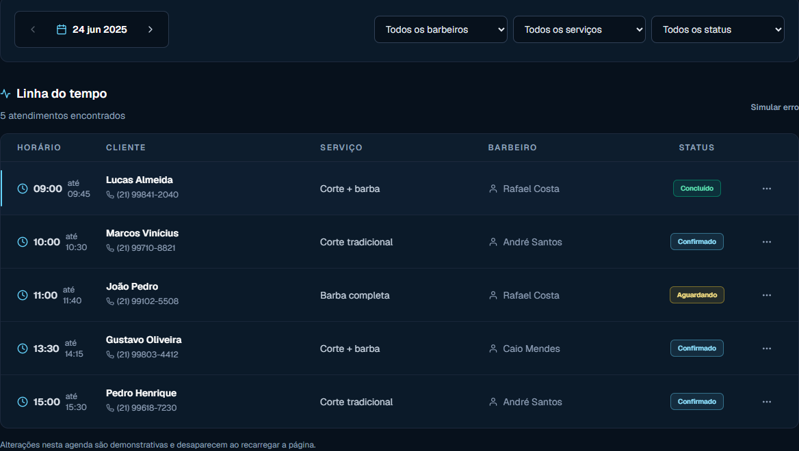
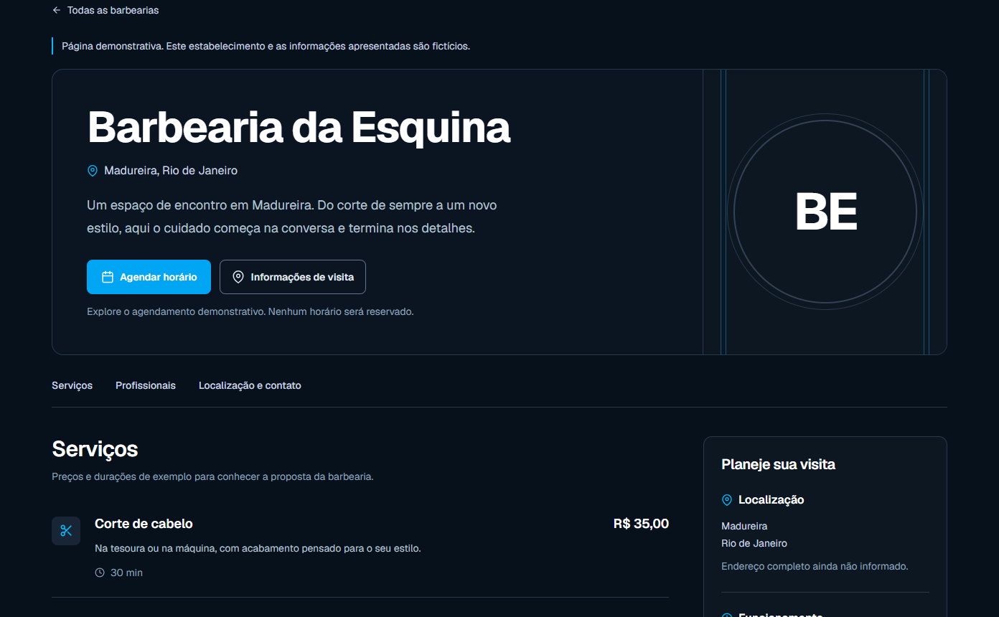
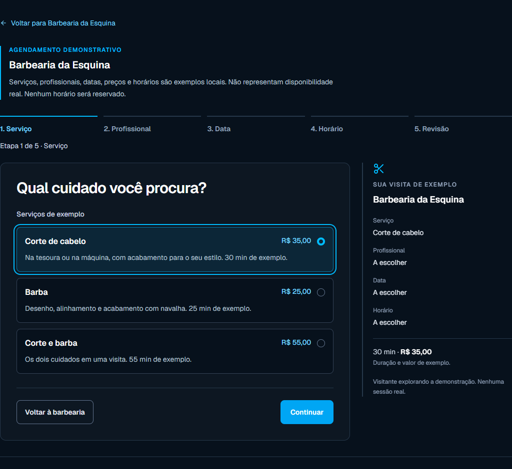
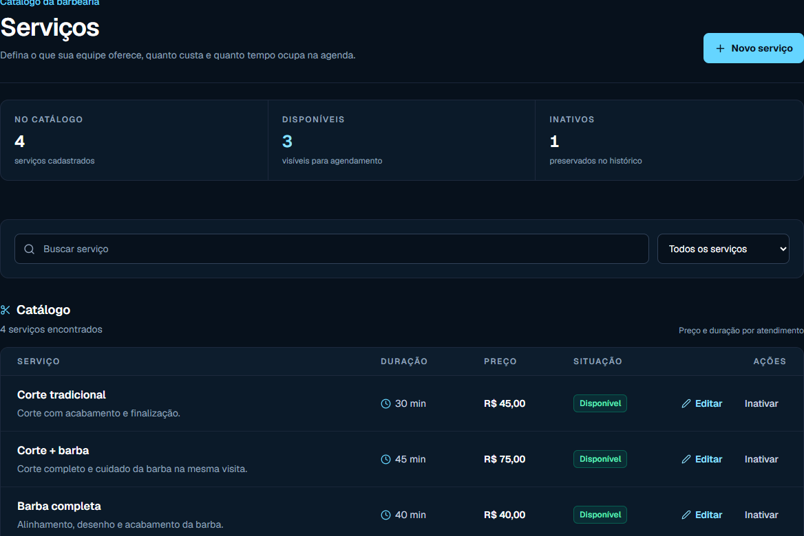
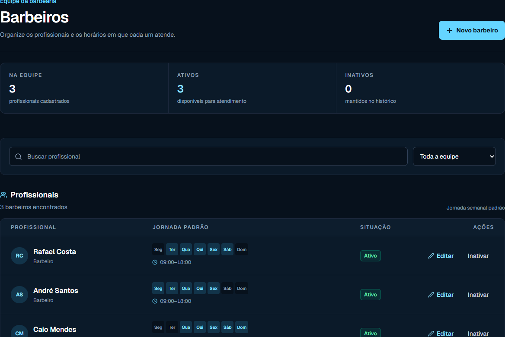
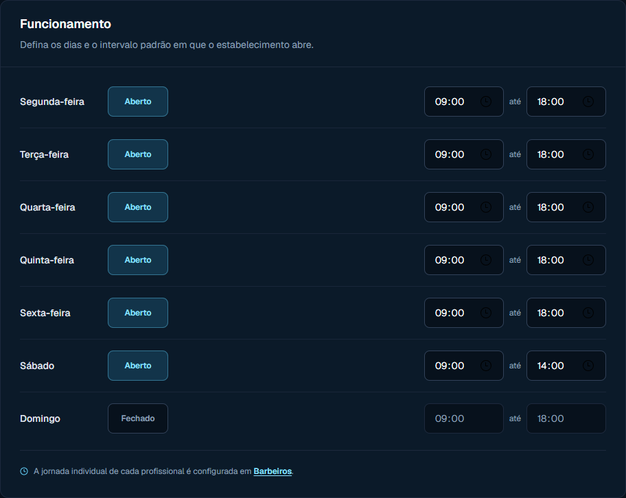

Sua barbearia apresentada.
Sua agenda organizada.
O BarberHub reúne a página da sua barbearia e a organização de serviços, equipe e horários. Conheça o produto pelas telas e experimente a configuração demonstrativa.
Demonstração local. Não cria conta
nem publica uma barbearia.

Antes do horário,
a sua barbearia.
Um perfil público para apresentar serviços, preços, profissionais, localização e funcionamento. É por ele que o cliente conhece a barbearia e começa o agendamento.
Ver exemplo de barbearia
O cliente escolhe.
Passo a passo.
Serviço, profissional, data, horário e revisão. A seleção existente deixa cada escolha visível durante o percurso.
Você pode explorar o exemplo sem autenticação. Datas e horários são fictícios; concluir a demonstração não reserva um horário.
Explorar agendamento demonstrativo
O que acontece
do lado de dentro.
Serviços, equipe e funcionamento dão forma à rotina. A agenda apresenta horários e situações dos atendimentos para acompanhamento.
O cuidado, o preço e a duração.
A tela de serviços mostra o catálogo e seus estados na amostra administrativa.

Quem faz parte da equipe.
A tela de profissionais apresenta a equipe e os serviços associados no exemplo administrativo.

Os dias e os horários de funcionamento.
A configuração apresenta os intervalos de abertura do exemplo. A jornada individual tem seu próprio acesso na área de equipe.

As amostras administrativas, o perfil público e o agendamento são independentes. Alterar uma demonstração não atualiza as outras telas.
Comece pela
configuração.
O onboarding existente permite ensaiar a preparação da barbearia. Você escolhe entre um exemplo de cadastro e um convite fictício.
- 1
Configure o exemplo
Nome, localização, endereço público pretendido, serviço, profissional e funcionamento.
- 2
Revise o checklist
Acompanhe os requisitos mínimos e volte às etapas que precisam de ajustes.
- 3
Conheça a liberação
A publicação futura exige configuração mínima e compra confirmada ou liberação explícita do superadmin.
Completar o exemplo não publica a barbearia. A demonstração fica em memória e é descartada ao sair ou recarregar.
Experimentar configuraçãoUm único plano
para sua barbearia.
Funcionalidades previstas para o MVP:
- Perfil público
- Serviços
- Equipe
- Funcionamento
- Agenda
- Agendamentos
R$ 40/mês
por barbearia
Contratação ainda indisponível
O preço está definido. O produto ainda depende de integração para oferecer operações reais.
Experimentar configuraçãoAntes de começar,
tire suas dúvidas.
O que é o BarberHub?
É um sistema para apresentar a barbearia aos clientes e organizar serviços, equipe, funcionamento, agenda e agendamentos. Hoje você pode conhecer suas interfaces e demonstrações locais.
O que posso experimentar agora?
A configuração demonstrativa e o agendamento de exemplo. As telas usam dados fictícios em memória; não criam conta, acesso, estabelecimento ou reserva real.
Completar a configuração publica minha barbearia?
Não. O checklist apresenta requisitos mínimos. A publicação futura exige configuração e compra confirmada ou liberação explícita do superadmin, além da integração ainda pendente.
Quanto custa? Já posso contratar?
O plano aprovado custa R$ 40/mês por barbearia e contempla o escopo previsto para o MVP apresentado nesta página. Contratação ainda indisponível.
Criar conta já funciona?
A ação abre a apresentação de cadastro existente. O acesso com Google ainda está indisponível; escolher um perfil não cria conta nem concede permissões.
O exemplo de agendamento reserva um horário?
Não. Serviços, profissionais, datas e horários são demonstrativos. Disponibilidade real, prevenção de conflitos e reservas persistidas dependem do backend.
Veja como sua rotina
toma forma no produto.
Experimentar configuraçãoUm ensaio da configuração. Sem contratação ou publicação real.
Procurando um lugar para cortar o cabelo? Explorar catálogo demonstrativo